Get meta data in the current track
TRACK_META
# S3 method for TRACK_META
names(x)
# S3 method for TRACK_META
$(x, name)
# S3 method for TRACK_META
[[(x, i, exact = TRUE)
# S3 method for TRACK_META
[(x, i)
# S3 method for TRACK_META
print(x, ...)An object of class TRACK_META of length 1.
The TRACK_META object.
Name of the meta name. For all supported names, type names(TRACK_META).
Name of the meta name. For all supported names, type names(TRACK_META).
Please ignore.
Additional parameters.
The variable TRACK_META can only be used to get meta data from the "current" track. If the current track
is not the one you want, you can first use set_current_track() to change the current track.
Don't directly use TRACK_META. The value of TRACK_META itself is meaningless. Always use in form of TRACK_META$name.
There are the following meta data for the current track:
xlim: Data range on x-axis.
xmin: xlim[1].
xmax: xlim[2].
xrange: xlim[2] - xlim[1].
xcenter: mean(xlim).
theta_lim: Range of the angles on the spiral, measured in radians.
theta_min: theta_lim[1].
theta_max: theta_lim[2].
theta_range: theta_lim[2] - theta_lim[1].
theta_center: mean(theta_lim).
ylim: Data range on y-axis.
ymin: ylim[1].
ymax: ylim[2].
yrange: ylim[2] - ylim[1].
ycenter: mean(ylim).
rel_height: Fraction of height of the track to the distance between two neighbouring loops.
abs_height: The height of the track, which is rel_height multiplied by the distance between two neighbouring loops.
track_index: Current track index.
spiral_initialize(xlim = c(0, 1))
spiral_track(ylim = c(0, 1))

for(nm in names(TRACK_META)) {
cat(nm, ":\n", sep = "")
print(TRACK_META[[nm]])
cat("\n")
}
#> xlim:
#> [1] 0 1
#>
#> xmin:
#> [1] 0
#>
#> xmax:
#> [1] 1
#>
#> xcenter:
#> [1] 0.5
#>
#> xrange:
#> [1] 1
#>
#> theta_lim:
#> [1] 6.283185 31.415927
#>
#> theta_min:
#> [1] 6.283185
#>
#> theta_max:
#> [1] 31.41593
#>
#> theta_center:
#> [1] 18.84956
#>
#> theta_range:
#> [1] 25.13274
#>
#> ylim:
#> [1] 0 1
#>
#> ymin:
#> [1] 0
#>
#> ymax:
#> [1] 1
#>
#> ycenter:
#> [1] 0.5
#>
#> yrange:
#> [1] 1
#>
#> abs_height:
#> [1] 0.64
#>
#> rel_height:
#> [1] 0.8
#>
#> track_index:
#> [1] 1
#>
names(TRACK_META)
#> [1] "xlim" "xmin" "xmax" "xcenter" "xrange"
#> [6] "theta_lim" "theta_min" "theta_max" "theta_center" "theta_range"
#> [11] "ylim" "ymin" "ymax" "ycenter" "yrange"
#> [16] "abs_height" "rel_height" "track_index"